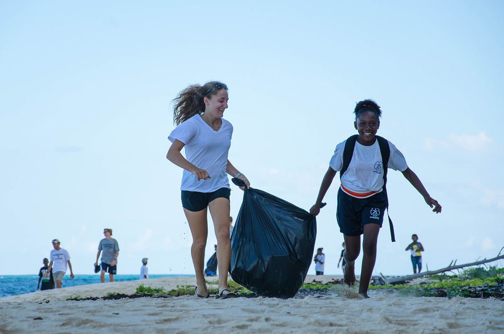
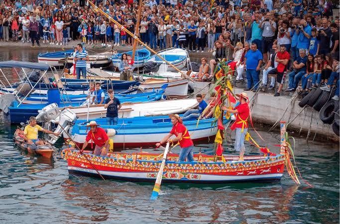

VIVERE LE ISOLE
IL SENSO DI COMUNITÀ
Il senso di comunità nasce dai legami di ogni giorno: riconoscersi, condividere e prendersi cura di un luogo, insieme.

01 / APPARTENERE
Non solo un luogo.
Una rete di relazioni.
Abitare un’isola può significare incontrarsi spesso, condividere spazi e riconoscere volti familiari. Dai saluti per strada all’aiuto nei momenti difficili, la vicinanza può diventare fiducia.
Ogni isola, però, ha la propria storia: il senso di appartenenza non è uguale per tutti e si costruisce anche accogliendo chi arriva.
I gesti che fanno comunità
La vita collettiva prende forma nelle cose più semplici.
01
Darsi una mano
Una commissione per un vicino, un passaggio, un attrezzo prestato. Piccoli scambi possono creare una rete di sostegno, soprattutto quando distanze e collegamenti rendono tutto meno immediato.
02
Ritrovarsi ogni giorno
La piazza, il porto, la scuola e le botteghe sono più di luoghi di passaggio: diventano occasioni per parlare, confrontarsi e tenere vive le relazioni tra generazioni.
03
Condividere i momenti
Una festa, un pasto preparato insieme, un’iniziativa di quartiere. Partecipare dà spazio a ricordi comuni e permette anche a chi è appena arrivato di sentirsi parte del luogo.

02 / TRAMANDARE
La memoria
diventa futuro.
Ricette, racconti, mestieri e feste custodiscono modi diversi di abitare le isole. Passano tra generazioni quando qualcuno li racconta, li insegna e li rinnova.
Non sono tradizioni immobili: chi resta, chi torna e chi arriva può dare loro significati nuovi, senza perdere il legame con il luogo.
03 / CONVIVERE
Essere vicini non è sempre semplice.
La comunità è una risorsa, ma non cancella le difficoltà. Riconoscerle aiuta a costruire legami più aperti.
Vicinanza e libertà
Conoscersi può dare sicurezza, ma lasciare poco spazio alla riservatezza. Appartenere significa anche poter scegliere come vivere.
Restare, partire, tornare
Studio, lavoro e servizi possono portare altrove. Tenere vivi i legami permette di sentirsi parte dell’isola anche da lontano.
Accogliere il cambiamento
Nuovi abitanti e presenze stagionali trasformano i ritmi. Il dialogo aiuta a cercare un equilibrio tra esigenze diverse.
04 / PRENDERSI CURA
L’isola è un
bene condiviso.
Il senso di appartenenza diventa concreto quando si trasforma in attenzione per gli altri e per l’ambiente.
Rispettare i luoghi
Ridurre i rifiuti e usare con attenzione acqua e risorse.
Sostenere chi li abita
Scegliere attività locali e riconoscere il valore dei loro saperi.
Partecipare
Dedicare tempo a iniziative, associazioni e spazi comuni.
Lasciare spazio a tutti
Ascoltare bisogni diversi, tra generazioni e nuove presenze.
CONTINUA IL VIAGGIO
Oltre il paesaggio, le persone.
Ogni isola ha una storia diversa. Scoprila anche attraverso chi la vive.